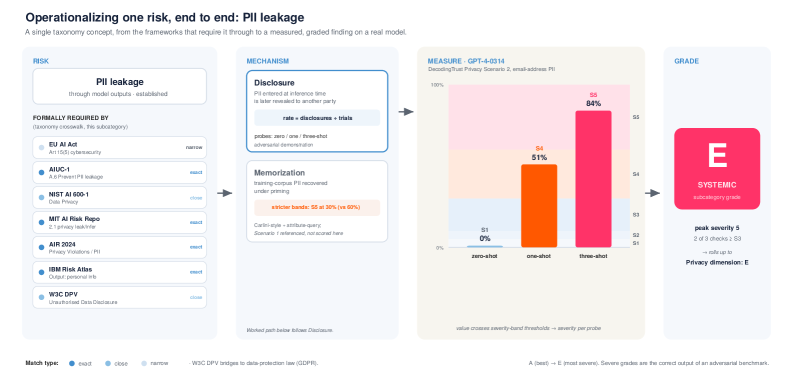

Executive Summary
AI가 만들 수 있는 해악의 목록은 지난 2년 사이 두 배 넘게 두꺼워졌습니다. 그런데 그 목록을 펼쳐 놓고 회의에 들어가 본 사람은 늘 같은 자리에서 막힙니다. 어떤 위험이 우리 얘기인지까지는 짚어도, 그것을 누가 어느 단계에서 막아야 하는지는 아무도 적어 두지 않았기 때문입니다.
2026년 8월 arXiv에 공개되고 AIES 2026에서 발표될 논문 한 편이 그 이유를 두 가지로 정리했습니다. 산업과 학계, 비영리 조직, 정부에서 일하는 실무자 25명을 인터뷰한 결과입니다. 분류체계를 만들 때 내린 판단이 쓰는 사람에게 보이지 않아 목록이 빠짐없는 재고표로 읽히고, 항목이 특정 결정이나 책임 주체에 연결되지 않아 책임 소재를 따지기 어렵다는 것입니다. 저자들은 그 연결을 떠받칠 거버넌스 틀이 아직 없다고 결론지었습니다.
두 결함 모두 데이터 실무에는 낯선 이야기가 아닙니다. 출처를 적지 않은 스키마와 계보가 끊긴 데이터 카탈로그가 감사 앞에서 겪는 일이 같은 구조입니다.
주요 수치
앞의 세 숫자는 목록을 넓히고 측정을 정교하게 다듬는 쪽에서 지난 2년간 거둔 성과입니다. 마지막 하나는 그 성과가 조직의 결정에 닿는 자리에서 여전히 비어 있는 칸입니다.
출처: MIT AI Risk Repository, Eticas AI Risk Taxonomy v3.0.0, Berman et al., arXiv:2608.06831
777 → 1,700+
목록에 오른 AI 위험 항목
MIT AI Risk Repository, 2024년 8월에서 2025년 12월 사이
43 → 74
그 목록이 참조한 프레임워크
같은 기간에 새 분류체계가 이만큼 더 만들어졌습니다
84%
적대적 조건에서 측정된 개인정보 유출률
Eticas가 GPT-4-0314에 실제 테스트를 돌려 등급 E 부여
없음
항목을 책임 주체와 결정 지점에 잇는 층
실무자 25명 인터뷰가 도달한 결론
목록은 두꺼워지고 담당자 칸은 비어 있다
AI 위험을 한자리에 모으는 작업은 최근 몇 년 사이 상당한 성과를 냈습니다. MIT AI Risk Repository는 2024년 8월 43개 프레임워크를 훑어 777개 위험을 코딩한 데이터베이스로 출발했고, 2025년 12월 4일 공개된 4차 개정에서 참조 프레임워크가 74개, 항목이 1,700여 개로 늘었습니다. 위험이 어떻게 왜 발생하는지 설명하는 인과 분류와 7개 도메인, 23개 하위 도메인으로 나눈 영역 분류가 함께 붙어 있고, 항목마다 출처 논문과 인용 문장, 쪽수까지 달려 있습니다. 목록으로서는 흠잡을 데가 적습니다.
비어 있는 것은 각 줄의 오른쪽입니다. 어떤 위험이 우리 조직에 해당한다고 판단했을 때, 그것을 누가 맡는지, 개발 과정의 어느 단계에서 걸러야 하는지, 그 단계를 통과시킨 사람이 무엇을 근거로 승인했는지는 목록 어디에도 적혀 있지 않습니다. 목록은 무엇이 위험한지까지 알려 주고 거기서 멈춥니다.
목록이 멈추는 그 자리를 실증으로 파고든 연구가 2026년 8월 7일 arXiv에 올라왔습니다. Glen Berman과 공저자들이 쓰고 AIES 2026에서 발표될 논문으로, 사회기술적 결과 분류체계(Sociotechnical Outcome Taxonomy)를 실제로 만들거나 쓰는 실무자 25명을 인터뷰했습니다. 인터뷰 대상은 산업, 학계, 비영리 조직, 정부에 걸쳐 있습니다. 저자들의 핵심 발견은 이 분류체계들이 실제 거버넌스 관행에 거의 자리 잡지 못했다는 것이고, 그 원인으로 설계상의 요인 두 가지를 지목합니다.
만든 사람의 판단이 지워진다
분류체계를 만드는 일은 사실 편집 작업에 가깝습니다. 어떤 해악을 독립 항목으로 세울지, 비슷한 두 해악을 하나로 묶을지, 어느 추상 수준에서 자를지, 아직 근거가 얇은 위험을 넣을지 뺄지를 매번 정해야 합니다. 이 판단들이 모여 목록의 모양을 만듭니다.
논문이 지적하는 첫 번째 결함은 그 판단이 최종 사용자에게 불투명하게 남는다는 점입니다. 결과물만 받아 든 사람은 범주 묶음을 완결된 위험 재고표로 착각합니다. 목록에 실린 항목은 점검해야 할 대상이 되고, 실리지 않은 것은 자연스럽게 논의에서 빠집니다. 만든 쪽은 특정 관점에서 해석을 돕는 도구로 내놓았는데, 받는 쪽은 빠짐없이 채워진 체크리스트로 읽는 어긋남이 생깁니다.
데이터 실무에서 같은 어긋남을 부르는 이름은 스키마 문서화입니다. 컬럼 정의를 누가 언제 왜 그렇게 정했는지 적어 두지 않으면, 몇 달 뒤 그 표를 받는 사람은 컬럼 이름만 보고 뜻을 짐작합니다. 유효 기간의 기준 시각이 수집 시점인지 반영 시점인지, 결측이 0으로 채워진 것인지 진짜 0인지 같은 판단이 정의문 안에 흡수되어 보이지 않게 됩니다. 그 스키마는 해석을 돕는 도구 대신 다툴 수 없는 정의로 쓰이기 시작하고, 정의가 틀렸을 때 되돌아갈 지점도 사라집니다.
고칠 방법은 어렵지 않습니다. 항목 옆에 판단의 근거와 범위를 함께 적으면 됩니다. 이 목록이 무엇을 다루려고 만들어졌는지, 무엇을 일부러 뺐는지, 어떤 상황에서는 쓰지 말아야 하는지를 밝히는 한 문단이면 읽는 사람의 태도가 달라집니다. 방법이 어려운 게 아닙니다. 목록을 다 채운 뒤에도 쓸 것이 남아 있다고 인정하기가 어렵습니다.
항목이 결정에 닿지 않는다
두 번째 결함은 더 직접적입니다. 논문의 표현대로 분류체계는 대체로 해악을 나열할 뿐 그것을 특정 결정이나 책임 주체에 연결하지 않습니다. 목록에 있는 위험이 현실이 되었을 때, 이를 걸렀어야 할 사람이 누구인지 목록으로부터 되짚을 방법이 없습니다.
아래 도식은 이 단절이 실무에서 어떤 모양인지 그린 것입니다. 왼쪽 상자에는 잘 정리된 위험 항목이 있습니다. 이름과 정의, 출처, 심각도까지 채워져 있습니다. 오른쪽 상자에는 데이터 수집 승인이나 모델 배포 결재처럼 날짜와 결재자가 실제로 남는 절차가 놓여 있고, 담당 칸만 비어 있습니다. 가운데 점선은 두 쪽이 서로를 참조하지 않는 상태입니다. 이 선이 실선이 되려면 위험 항목마다 어느 단계에서 검토되는지와 그 단계를 통과시킬 역할이 함께 적혀 있어야 하는데, 지금의 분류체계에는 그 칸 자체가 없습니다.
이 공백은 가장 최근의 시도에서도 그대로 남아 있습니다. 2026년 7월 공개된 Eticas AI Risk Taxonomy v3.0.0은 세상에 최소 74개의 AI 위험 분류체계가 있고 그중 거의 전부가 목록 단계에서 멈춘다는 진단으로 시작합니다. 저자들이 어려운 부분으로 꼽은 것은 위험에 이름을 붙이는 일이 아니라 그것을 실제 시스템에 돌릴 수 있는 시험으로 바꾸는 일입니다. 실제로 개인정보 유출 위험 하나를 끝까지 밀어붙여, GPT-4-0314에 적대적 조건을 단계적으로 강화하며 유출률을 0%, 51%, 84%로 계측하고 심각도 구간에 대입해 하위 항목 등급 E와 시스템 전반의 문제라는 판정을 붙였습니다. 이 방법을 확장하려고 만든 분류체계는 10개 카테고리와 21개 하위 그룹, 70개 세부항목으로 정리돼 있습니다. 외부 프레임워크 18개에도 매핑됩니다.

측정과 등급까지 왔다는 점에서 이전 목록들보다 확실히 멀리 갔습니다. 그런데도 등급 E라는 판정을 받아 무엇을 해야 하는 사람이 조직 안의 누구인지, 그 판정이 배포 결재의 어느 항목에 걸리는지는 여전히 분류체계 바깥의 문제로 남습니다. 계측 결과를 손에 쥐고도 그것을 받을 사람이 정해져 있지 않으면 보고서는 회람되다 멈춥니다.
데이터 실무의 대응물은 계보가 끊긴 카탈로그입니다. 어떤 테이블이 어느 파이프라인에서 만들어졌고 지난 분기에 누가 변환 로직을 바꿨는지 기록이 없으면, 카탈로그에 자산이 아무리 많이 등록되어 있어도 감사에서는 별 힘을 쓰지 못합니다. 문제가 있다는 사실까지는 보여 주지만 누가 언제 무엇을 했어야 했는지는 증명하지 못하기 때문입니다. 위험 분류체계가 지금 놓인 자리가 정확히 여기입니다.
두 결함은 같은 습관에서 나온다
출처를 남기지 않는 것과 항목을 책임 주체에 잇지 않는 것은 별개의 실수처럼 보이지만 뿌리가 같습니다. 목록을 완성하면 일이 끝난다고 보는 습관입니다. 항목을 다 채우고 분류 축을 정리해 문서로 묶으면 산출물은 완성된 것처럼 보이고, 실제로 그 시점에 프로젝트가 종료되는 경우도 많습니다. 목록이 어디에 꽂혀 무엇을 움직이는지는 다음 사람의 몫으로 넘어갑니다.
아래 표는 논문이 짚은 두 결함과 데이터 실무에서 대응하는 실패를 나란히 놓은 것입니다. 오른쪽 열에는 두 실패가 감사 자리에서 어떤 모습으로 드러나는지 적었습니다. 평소에는 어느 쪽도 큰 불편 없이 굴러가고, 밖에서 누군가 근거를 요구하는 순간에만 빈칸이 보이기 때문입니다.
| 위험 분류체계에서 | 데이터 실무에서 | 감사에서 드러나는 결과 |
|---|---|---|
| 설계 판단이 보이지 않는다 | 스키마의 출처와 정의 근거 미기록 | 목록에 없는 위험은 검토 대상에서 빠지고, 정의를 되짚을 근거가 없다 |
| 항목이 결정에 연결되지 않는다 | 계보 없는 데이터 카탈로그 | 문제가 있다는 것까지만 보이고, 누가 언제 고쳤어야 했는지는 증명되지 않는다 |
정리: 페블러스. 왼쪽 두 항목은 Berman et al. (2026)이 지목한 설계 요인.
분류가 어긋나면 사후 집계에서도 값을 치릅니다. 2026년 ICML의 기술적 AI 거버넌스 워크숍에 채택된 다른 논문은 AI 사고 관리를 다루면서, 규제기관과 독립 기구들이 사고의 정의, 분류, 모니터링, 보고 방식을 제각각 쓰고 있다고 지적합니다. 어떤 데이터를 수집해 어떻게 범주화하는지가 기관마다 다르니, 모아 놓은 사고 기록으로 할 수 있는 분석의 깊이와 대표성, 정확성이 함께 떨어집니다. 목록이 서로 맞물리지 않으면 사고가 나도 합산되지 않습니다.
Berman과 공저자들이 마지막에 요구한 것이 바로 이 지점입니다. 분류체계가 제 몫을 하려면 항목을 결정과 책임에 잇는 거버넌스 틀이 있어야 하는데, 그런 틀이 지금은 존재하지 않는다는 것입니다. 목록 자체는 인프라가 아니고, 인프라가 되려면 목록 바깥에서 누군가 배선을 해야 합니다.
우리 지표는 누구를 가리키는가
같은 질문을 우리 데이터 품질 대시보드 앞에서도 해 볼 수 있습니다. 완전성 92%, 정확성 87%, 최신성 3일 지연 같은 숫자가 화면에 떠 있습니다. 이 숫자들은 상태를 정확히 보고합니다. 문제는 그 숫자 옆에 값이 나빠지면 누가 움직이는지가 적혀 있느냐입니다.
지표가 떨어졌을 때 실제로 무엇이 움직이는지 확인하려면 세 가지를 물어보면 됩니다. 알림이 도착하는 사람, 그 사람이 실제로 손댈 수 있는 대상, 고친 사실이 남는 자리를 차례로 짚는 질문입니다. 위험 항목이 결정 지점에 이어져 있는지 확인할 때 밟는 절차와 같습니다.
- 이 지표가 기준선 아래로 내려가면 누구의 화면에 알림이 뜹니까.
- 그 사람이 손댈 수 있는 대상은 무엇입니까. 수집 스크립트입니까, 라벨링 지침입니까, 아니면 상류 시스템의 담당 팀입니까.
- 고친 뒤 그 사실이 어디에 기록되어, 다음 분기 감사에서 근거로 제시됩니까.
세 질문에 답이 나오면 그 지표는 계기판이 아니라 배선입니다. 답이 막히면 지표는 성적표에 가깝습니다. 상태는 알려 주되 누구도 움직이게 하지 않습니다. AI 위험 분류체계가 지금 겪는 일이 규모만 다를 뿐 같은 종류입니다.
Editor's Note: 페블러스가 데이터 품질을 이야기할 때 점수를 매기는 일보다 오래 붙들고 있는 것이 이 배선입니다. 어떤 지표가 나빠졌는지 아는 일과 그것을 고칠 사람이 정해져 있는 일은 다른 작업이고, 뒤쪽이 없으면 앞쪽은 보고서로 끝납니다. 위험 목록이든 품질 지표든 항목 옆에 사람의 이름과 시점이 적혀 있을 때 비로소 조직이 그것을 쓰기 시작합니다.
참고문헌
학술 논문
- 1.Berman, G., Cooper, N., Hwang, A. H.-C., Deng, W. H., Shelby, R., & Hutchinson, B. (2026). "Death by a thousand taxonomies?": AI Risk Classification In Practice. AIES 2026, arXiv:2608.06831.
- 2.Galdon Clavell, G., Accuosto, P., & Gohar, U. (2026). "The Eticas AI Risk Taxonomy: Open Infrastructure for Operationalizing AI Audits." arXiv:2607.02201.
- 3.Sidhu, H. K., Scholefield, R., Annan, N., Hernandez, K., Hou, I. N., Alshaikhi, A., Chin, Z. S., & Gipiškis, R. (2026). "Open Problems in AI Incident Governance." ICML 2026 Technical AI Governance Workshop, arXiv:2607.05163.
데이터베이스·공식 문서
- 4.MIT FutureTech. "The AI Risk Repository." 2024년 8월 공개, 2025년 12월 v4 갱신.
- 5.MIT AI Risk Repository. (2025-12-04). "Repository Update: December 2025."